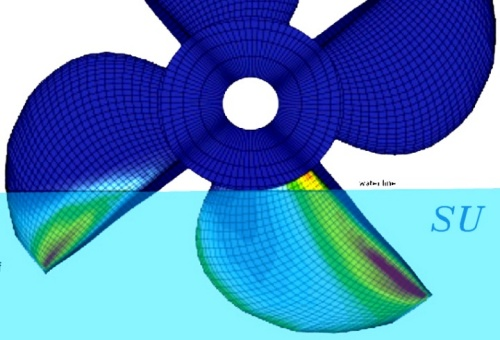
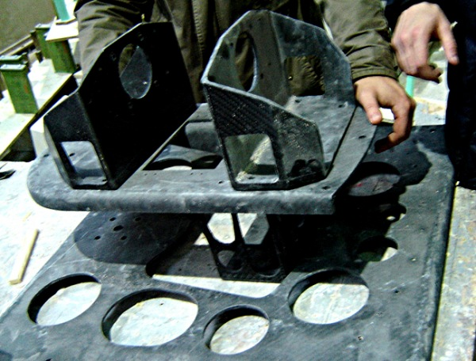
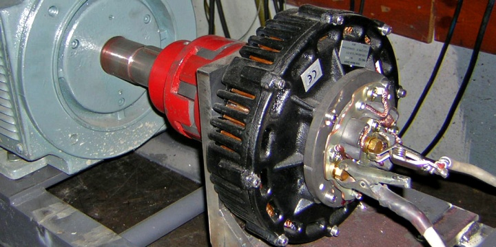
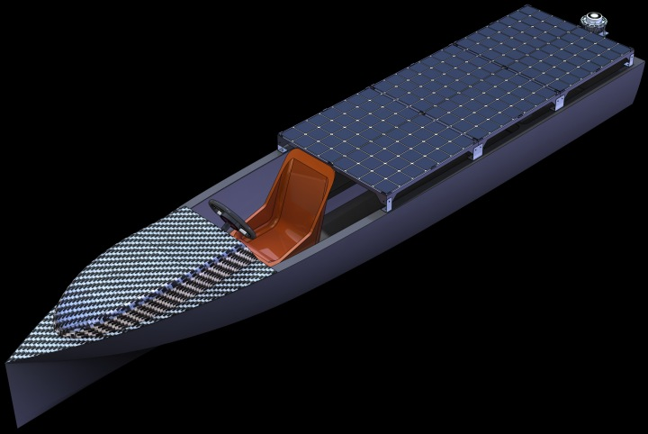
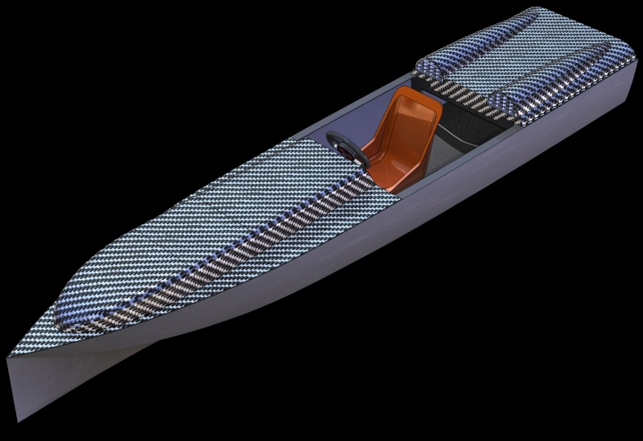
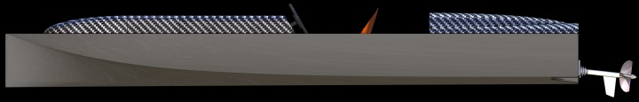
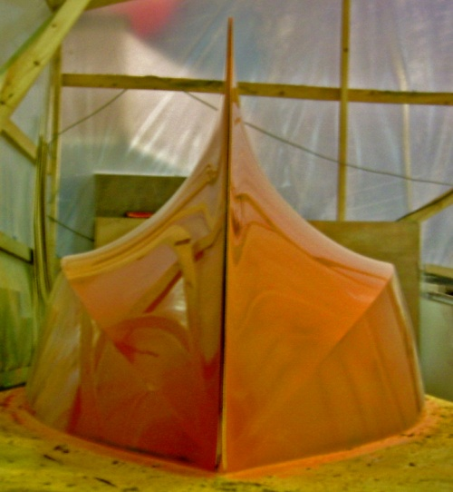
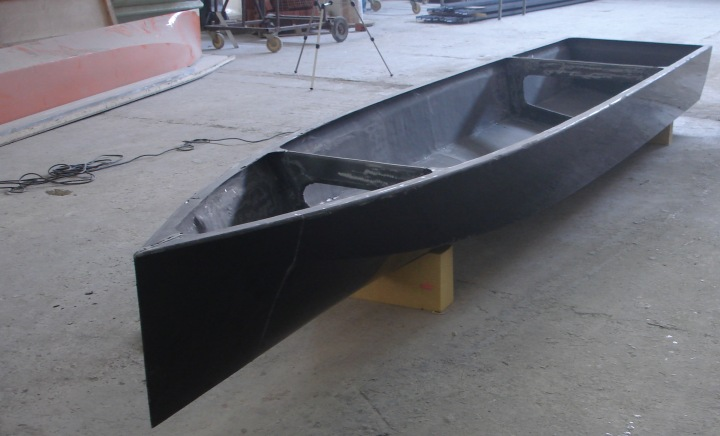
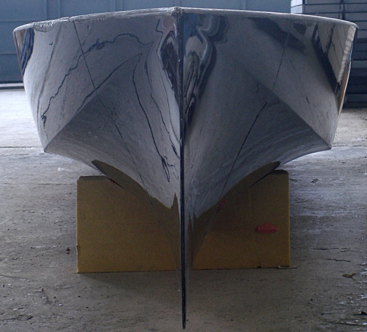

|






Teknelerin katýldýðý diðer bir etap ise Sprint etabi, bu parkurda ise onlarýn, ayný arabalarýn drag yarýþlarýndaki gibi sýfýr hýzla baþlayýp 300m'lik bir parkuru en kýsa zamanda katetmeleri amaçlanýyor. Bu etapta yine kendi tasarýmýmýz olan yüzeyi yaran pervane ve sevk sistemi ile yarýþtýk ve girdiðimiz tüm elemeleri birinci bitirmiþ olmamýza raðmen son ayakta rüzgar yüzünden geç bitirip sýralamada 4. olduk.
Son etap ise endurance etabýydý. Bu etapta ise teknelerin 2 saat boyunca bir parkur etrafýnda tur atmalarý isteniyor ve en çok tur atan ise birinci oluyordu. Slalom ve Sprint etaplarýnda yuksek hýz ve ivmelenme öne çýkýyorken endurance etabýnda düþük hýzdaki verimlilik ön plandaydý.
Solar Splash Yarýþmasý'nýn bizi heyecanlandýran zorluðu da bu üç etapta da yarýþýp bunlardan puan toplamamýz gerekmesiydi. Ayný tekneden hem yüksek hýza sahip olmasý, hem iyi manevra yapabilmesi hem de düþük hýzlarda verimli hareket edebilmesi isteniyordu. Normalde bu özelliklerin her biri farklý tekne formlarýyla altýndan kalkýlabilen problemlerken tek bir tekneyi uygun þekilde optimize edip bu üç özelliði de iyi bir þekilde saðlamaya çalýþmak sandýðýmýzdan çok daha zor oldu.
Baþýndan beri düþündüðümüz þey, Nusrat'ý mümkün olan en yüksek yerli ekipman ve kendi tasarýmýmýzla üretmemizdi. Tekne tasarýmý ve imalatýný tamamen biz yaptýk. Dümen sistemleri ve pervane tasarým ve imalatýný da yine tamamen yerli malzeme ile biz gerçekleþtirdik. Gunes panellerimizden maksimum gucu almanin yaninda akulerimizi sarj eden ve herhangi bir sorun aninda panelleri veya akuleri bypass eden guvenlik onlemlerini, motor sürücü devremizi yine biz tasarlayýp ürettik. Bunlarý gerçekleþtirebilmek için gerekli deney düzeneklerini ve simülasyonlarý yine tamamen biz yaptýk. Bu açýdan bakýnca da teknemiz tam anlamýyla bir "Türk Mühendisinin ve Türk Gencinin Emeði" oldu...
Teknemize verdiðimiz Nusrat ismini ise, Çanakkale Savaþý'ndaki kahraman mayýn gemimiz Nusrat Mayýn Gemisi'nden aldýk. Bu ismi taþýmak bizim için bir gurur olmasýnýn yanýnda ciddi bir yüktü. Ülkemizi temsil ettiðimiz bu yarýþmada, bu isme layýk olabilmek için yarýþma öncesinde çok ciddi bir test ve tatbikat sürecine tabi tuttuk teknemizi. Tüm sistemlerin týkýr týkýr çalýþtýðýný görerek bu yükü taþýyabileceðimize karar verdik.. Ona layýk olan dünya þampiyonluðu idi ama ilk katýlýmýmýzda dünya üçüncüsü olmuþ ve bunun yanýnda beþ farklý ödüle layýk görülmüþ olmamýz içimizi bir nebze rahatlatýyor.
|
Nusrat'ýn döþediði mayýnlar 18 Mart 1915'te Çanakkale harekatýnýn kaderini deðiþtirmiþ, ona "dünyanýn en ünlü mayýn gemisi" unvanýný kazandýrmýþtý. Nusrat'ýn mayýnlarý 639 kiþilik mürettebatýyla Bouvet, onun ardýndan Inflexible ve Bolva zýrhlýlarýný sulara gömmüþtü.
Bahriye Nazýrý Winston Churchill 1930'da "Revue de Paris" dergisinde olayý þöyle yorumlamýþtýr: "Birinci Dünya Harbi'nde bu kadar insanýn ölmesine, harbin aðýr masraflara mal olmasýna, denizlerde onca ticaret ve savaþ gemisinin batmasýna baþlýca neden, Türkler tarafýndan o gece atýlan o incecik çelik halat ucunda sallanan yirmi demir kaptýr."
|
Projeyi gerçekleþtirirken maddi olarak kimlerden destek aldýnýz? Sponsor bulabildiniz mi? Projeyi gerçekleþtirmek ne kadara mâl oldu?
Ülkemizde projeler yapmak ve araçlar üretmek isteyen çok sayýda mühendis ve bilimadamý var. Ancak fikirlerine destek bulmakta çok zorluk çekiyorlar. Bizce beyin göçü dediðimiz hadisenin de asýl sebebi bu. Ne yazýk ki büyüklerimiz, gençlere çok fazla güvenmiyor ve fikirlerini desteklemeye deðer bulmuyor. Yurtdýþýnda bunun ülkemizdeki gibi olmadýðýný biraz da üzülerek gördük.
Yukarýda deðindiðim gibi teknemizi tasarlamaya 2004 Mayýs ayýnda baþlamýþtýk ve 2005 Haziran'daki yarýþmaya katýlabilmeyi hayal etmiþtik. Ýlk yýl Yonca-Onuk Tersanesi bizi desteklemiþ ve teknemizin kompozit üretimine baþlamýþtýk ancak çalýþmalarýmýzý sürdürebilmek için daha fazla desteðe ihtiyacýmýz vardý ve sponsorluk görüþmesi yaptýðýmýz firmalardan baþýmýz önümüzde dönüyorduk. Kendi öðrenci harçlýðýmýzdan biriktirdiklerimizle hazýrladýðýmýz sponsorluk dosyalarýmýzý, teknemizi tanýtan diðer dökümanlarý firmalara veriyorduk ve çoðu zaman bize bir çay bile ikram edilmeden firmadan ayrýlýyor ve sonrasýnda firmadan hiç haber alamýyorduk. 2005 yarýþmasýna, destek bulamadýðýmýz için katýlamadýk...



|